Всех приветсвую на моем сайте. Здесь вы узнаете как научится играть в такую игру как Hearts of iron 4
На этой панели показаны главные ресурсы вашей страны: Политическая власть в виде здания со значением 1 — это очки для покупки законов и генералов; Стабильность с весами на 34 процентах отражает порядок в стране, и здесь она опасно низкая, что замедляет производство; Поддержка войны с кулаком на 45 процентах показывает готовность населения воевать и ускоряет мобилизацию; Людские ресурсы со значком солдат на 572 тысячи — это свободный запас призывников для создания и пополнения дивизий; а Свободные фабрики со значком завода на отметке 20 показывают количество гражданских предприятий, которые прямо сейчас простаивают без дела и должны быть срочно отправлены на строительство новых объектов
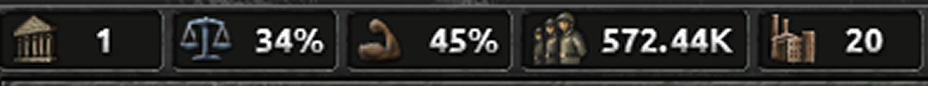
В самом начале выбераем только 1936 год у вас будет врема подготовится к войне и больше понять игру. В самом начале лучше всего выберать страну которую окружают слабые страны подходящий вариант в начале будет аргентина или бразилия у них есть какая не какая армия инфроструктура и они далеко от агресоров.В самом нчале игры стройте фабрики.Заходите во вкладку строительство и ищите фабрики стройте только там где у вас больще 60%-80% инфроструктуры и строим их до 1938 года. В 1938 наченаем строить военые заводы.
-
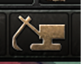
-
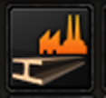
-
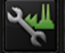
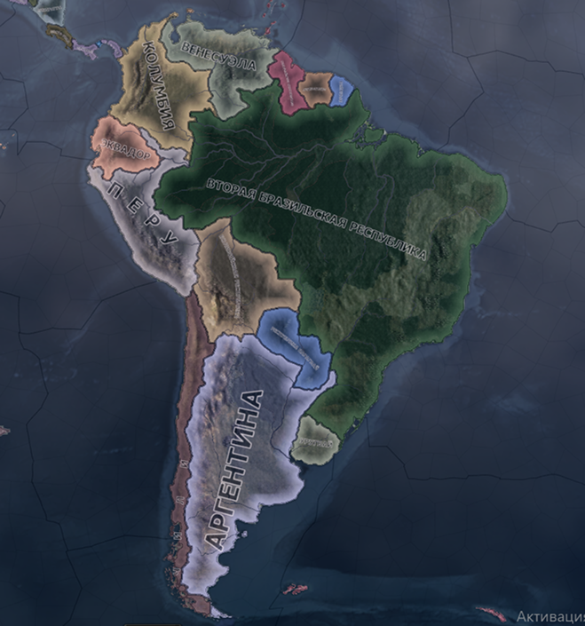
Политическая власть эта ваша валюта тратье ее на решения смену экономики министров и на призыв.
Решения
Решения — это специальная вкладка в игре, где вы можете мгновенно активировать различные события, проекты и временные бонусы за очки политической власти или стабильность.
-
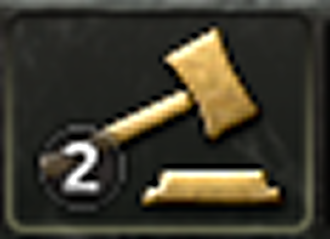
-
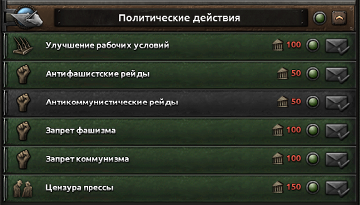
Экономика и министры
Экономика в HoI4 определяет скорость строительства заводов, гражданских фабрик и инфраструктуры, а также устанавливает торговые правила и доступность ресурсов для вашей промышленности. Министры (политический советник, конструкторские бюро, военное руководство) — это ключевые персонажи, которых вы нанимаете за политическую власть, чтобы получить уникальные пассивные бонусы. Они позволяют ускорить исследование технологий, улучшить характеристики дивизий в бою или дать мощный толчок развитию индустрии.
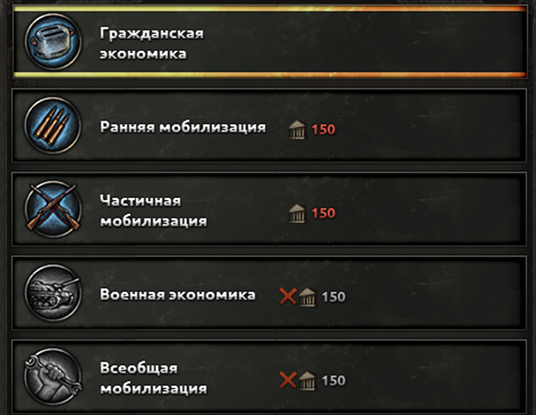
Людские ресурсы
Мирное время / Подготовка (1.5% – 2.5%): Стартовые законы. Оставляйте их, пока копите заводы. Если политвласти много, а вы планируете раннюю войну, поднимитесь до «Ограниченного призыва». Перед войной / Начало конфликта (5%): Переходите на «Ограниченный призыв» за несколько месяцев до нападения. Это даст пулу рекрутов время «натечь» до начала активных боев. Разгар крупной войны (10%): Переключайтесь на «Всеобщую воинскую повинность», как только свободный пул людей упадет ниже 100-150 тысяч. Это идеальная «золотая середина» для мажоров (крупных стран) — максимум людей без вреда для заводов.
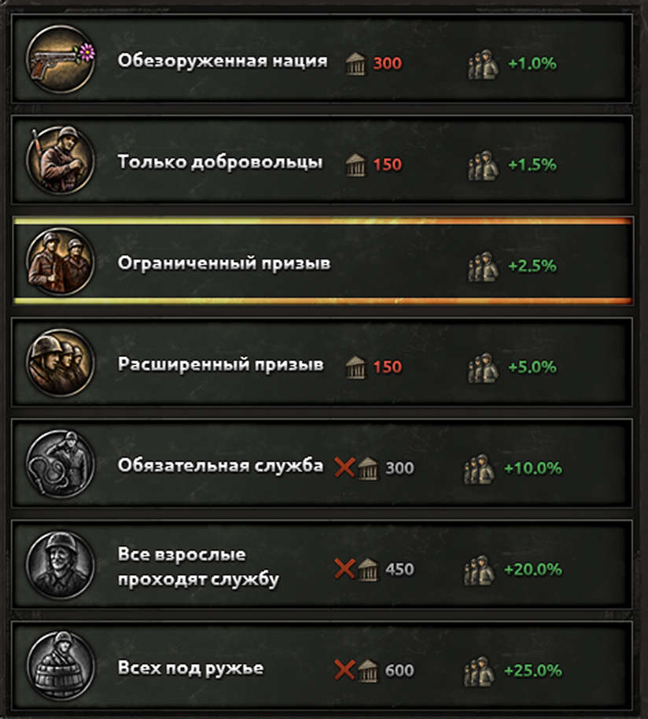
Древо фокусов
Национальные фокусы в HoI4 — это дерево государственных планов и сюжетов, которое определяет путь развития вашей страны. Выбирая один фокус за другим, вы получаете бесплатные заводы, бонусы к технологиям, меняете власть или находите поводы для войны с соседями. Это главный инструмент,с помощью которого вы превращаете свою державу в экономическую или военную сверхдержаву.
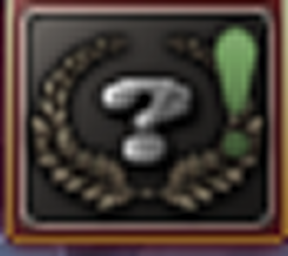
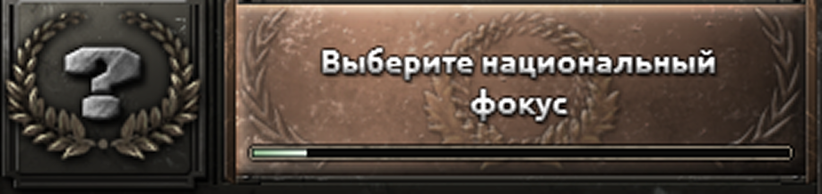
Как делать дивизии и упровлять своей армией
Как создавать дивизииСоздание войск происходит во вкладке «Набор и размещение». Вы выбираете готовый шаблон (чертеж) дивизии, отправляете его в производство и назначаете фабрики для выпуска нужного оружия (винтовок, танков, артиллерии). Дивизия начнет тренироваться, расходуя это снаряжение и людей из вашего запаса. Как только шкала обучения заполнится, вы сможете выставить готовую «дивку» прямо на карту в выбранный регион. Чтобы улучшить характеристики войск, вы можете редактировать шаблоны в конструкторе за очки армейского опыта — например, добавлять батальоны пехоты или роты поддержки.Подробнее можете узнать нажав сюда.
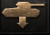
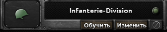
Как объединять войска и назначать генераловЧтобы эффективно управлять армией, выделите нужные дивизии на карте рамкой и нажмите на плюс внизу экрана, чтобы объединить их в одну группу. Обязательно кликните на портрет силуэта над этой группой и назначьте генерала — он даст войскам мощные боевые бонусы. Оптимально давать одному генералу не более 24 дивизий. После этого несколько таких армий можно объединить в один Группу армий (фронт) во главе с маршалом, который будет давать дополнительные стратегические баффы всем подчиненным войскам.
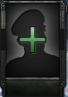
Как воевать: создание линии фронта и приказыУправлять войсками вручную слишком сложно, поэтому используйте панель приказов внизу экрана. Выберите армию, нажмите кнопку «Линия фронта» и кликните по границе с вражеским государством — ваши солдаты сами распределятся вдоль рубежа. Затем нажмите кнопку «Линия наступления» (стрелочка) и нарисуйте на территории врага стрелку до городов, которые хотите захватить. Когда начнется война, нажмите на стрелочку над портретом генерала: армия сама пойдет в автоматическое наступление, а вам останется лишь следить за ходом сражений.
-
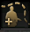
-
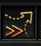